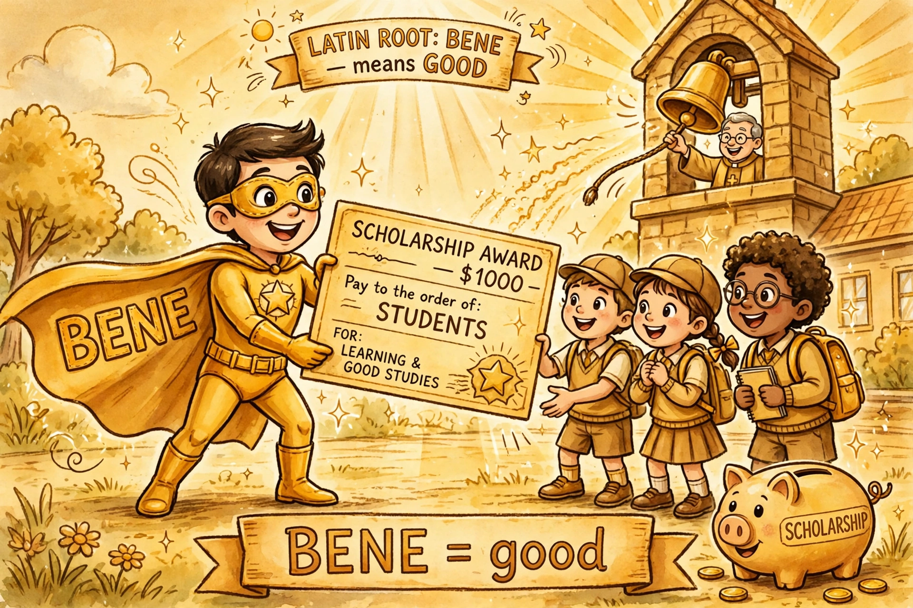

点开单元看词根；带链接的是已上线词根，其余陆续制作中。
词汇课首页 › Unit 1 › BENE
🔊 词根发音：/ˈbenə/ 点我跟读（重音在第一个音节，和 benefit 的开头读法一样）
An anonymous benefactor has pledged $150 million to the University of Richmond — the largest gift in the school’s nearly 200-year history. The money will fund scholarships and student support, making thousands of students the beneficiaries of one person’s benevolence.
给出的人（benefactor）、接收的人（beneficiary）、心里的善意（benevolence）——一句真实新闻，BENE 一家三口全齐了。
BENE is Latin for “well.” A benefit is a good result or effect. Something beneficial produces good results or effects. The Latin root can be heard in other languages as well: “Good!” or “Fine!” in Spanish is “Bueno!”; in French, it’s “Bon!”; and in Italian, just say “Bene!”

金色世界就是 BENE 一家：超人 benefactor 递上奖学金支票，学生们是 beneficiary，教堂的钟声对应 benediction，存钱罐上写着 benevolence 攒下的善意。
A prayer that asks for God's blessing, especially a prayer that concludes a worship service.
• The moment the bishop had finished his benediction, she squeezed quickly out of her row and darted out the cathedral’s side entrance.
In benediction, the bene root is joined by another Latin root, dictio, “speaking” (see DICT), so the word's meaning becomes something like “well-wishing.” Perhaps the best-known benediction is the so-called Aaronic Benediction from the Bible, which begins, “May the Lord bless you and keep you.” An important section of the Catholic Mass was traditionally known as the Benedictus, after its first word (meaning “blessed”). It was St. Benedict who organized the first Christian monasteries; many Christians have been baptized Benedict in his honor, and 16 popes have taken it as their papal name.
请求上帝赐福的祷告；尤指礼拜仪式结束时的祝福祷告。
例句：主教的祝福祷告一结束，她就迅速从座位里挤出来，从大教堂的侧门溜了出去。
在 benediction 这个词里，bene 词根和另一个拉丁词根 dictio（“说”，见 DICT）结合在一起，所以这个词的意思就有点像“说吉祥话、送上祝福”。最有名的 benediction 大概是《圣经》里所谓的“亚伦的祝福”，开头是：“愿主赐福给你，保护你。”天主教弥撒中一个重要的部分传统上被称为 Benedictus，取自它的第一个词（意思是“受祝福的”）。正是圣本笃创办了第一批基督教修道院；许多基督徒为了纪念他而受洗取名 Benedict，还有 16 位教皇选用它作为自己的名号。
—— 下面是我的讲解 ——
🧠 记忆妙招：bene（好）+ dictio（说）= 在正式场合「说好话」。想象这个画面：教堂的大钟一响，白发神父缓缓抬起双手，全场瞬间安静——接下来那段祝福，就是 benediction。它永远出现在仪式的最后几分钟，像电影结尾的字幕一样庄重。记住这个出场时机，就记住了这个词。
💡 场合与语境：婚礼、葬礼、毕业典礼、开业典礼等庄重仪式的结尾祝福；新闻报道宗教仪式、王室活动时也常见。高级替换：想说 blessing 又想显正式时用它——a closing benediction 比 a final blessing 立刻多一层仪式感。注意：它自带宗教色彩，日常聊天、公司团建这种场合说它会显得过分隆重；常见搭配 give / pronounce a benediction。
写作：写仪式感场景时点缀一下，气氛立刻庄重。
✏️ 拼写：bene-dic-tion，结尾 -tion；中间的 dict 是「说」的词根，和 dictionary 同源。
例句：
▸ The graduation ceremony ended with a short benediction.
毕业典礼以一段简短的祝福祷告结束。
▸ The priest gave a short benediction before the meal.
用餐前，神父做了一个简短的祝福祷告。
▸ After the benediction, the choir began to sing.
祝福祷告结束后，唱诗班开始唱歌。
Someone who helps another person or group, especially by giving money.
• An anonymous benefactor had given $15 million to establish an ecological institute at the university.
A benefactor may be involved in almost any field. One may endow a scholarship fund; another may give money to expand a library; still another may leave a generous sum to a hospital in her will. The famous benefactions of John D. Rockefeller included the gifts that established the University of Chicago, the Rockefeller Foundation, and Rockefeller University. Many benefactors have reported that giving away their money turned out to be the most rewarding thing they ever did.
帮助他人或团体的人；尤指在金钱上资助的恩人、赞助人。
例句：一位匿名资助者捐了 1,500 万美元，在这所大学建立了一个生态研究所。
benefactor 可以活跃在几乎任何领域。有人设立奖学金基金；有人出钱扩建图书馆；还有人会在遗嘱里给医院留下一大笔钱。约翰·D·洛克菲勒著名的善举包括：捐建了芝加哥大学、洛克菲勒基金会和洛克菲勒大学。许多 benefactor 都说，把自己的钱捐出去，是他们这辈子做过最有意义的事。
—— 下面是我的讲解 ——
🧠 记忆妙招：bene（好）+ factor（做事的人，和 factory 工厂同根）= 「做好事的人」，而且是掏钱做好事的那种。画面就是搞笑图里那位超人：不打怪兽、不拯救地球，专程飞来递支票。看到 -factor 结尾，就想起工厂里「做东西的人」——benefactor 是「做善事的人」。
💡 场合与语境：慈善新闻、捐赠报道、奖学金介绍、博物馆和医院的鸣谢名单，都是它的主场。高级替换：别总说 rich giver 或 kind person，新闻腔就用 benefactor；an anonymous benefactor（匿名捐赠者）更是报道里的固定说法。注意：偏正式书面，口头感谢同事帮忙用 helper、supporter 更自然；老式女性形式 benefactress 现在几乎不用了，男女统一用 benefactor。
写作：替换 a kind rich man who gave money，一句话变高级。
✏️ 拼写：bene-fac-tor，结尾是 -or 不是 -er；fac 是「做」的词根，和 factory（做东西的地方）同源。
例句：
▸ An anonymous benefactor paid for all the new books in our class library.
一位匿名好心人出钱买下了我们班图书角的全部新书。
▸ She is the main benefactor of the animal shelter in our town.
她是我们镇上那家动物收容所的主要资助人。
▸ The new library was built with money from a generous benefactor.
新图书馆是一位慷慨的资助者出钱建的。
▸ Every benefactor's name is carved on the wall by the entrance.
每位捐赠者的名字都刻在入口旁的墙上。
A person or organization that benefits or is expected to benefit from something, especially one that receives money or property when someone dies.
• Living in a trailer in near-poverty, she received word in the mail that her father had died, naming her as the sole beneficiary of his life-insurance policy.
Beneficiary is often used in connection with life insurance, but it shows up in many other contexts as well. A college may be the beneficiary of a private donation. Your uncle's will may make a church his sole beneficiary, in which case all his money and property will go to it when he dies. A “third-party beneficiary” of a contract is a person (often a child) who the people signing the contract (which is usually an insurance policy or an employee-benefit plan) want to benefit from it. In a more general way, a small business may be a beneficiary of changes to the tax code, or a restaurant may be the beneficiary when the one across the street closes down and its whole lunch crowd starts coming in.
受益人；受惠者；尤指在某人去世后接收钱款或财产的人。
例句：她住在拖车里，穷困潦倒，一天收到来信得知父亲去世了，并在人寿保险单上把她列为唯一受益人。
beneficiary 常和人寿保险一起出现，但它也出现在很多其他场合。一所大学可以成为一笔私人捐赠的 beneficiary（受益方）。你叔叔的遗嘱可以把一座教堂定为他的唯一受益人，这样他去世后，全部钱财都归教堂。合同里的“第三方受益人”，是指签合同的人（通常是保险单或员工福利计划）希望其从中受益的人（往往是孩子）。更宽泛地说，小企业可以成为税法变化的受益者；街对面的餐馆关了门、它的午餐客流全涌进来时，这家餐馆也是受益者。
—— 下面是我的讲解 ——
🧠 记忆妙招：它和 benefactor 是「一给一收」的一对：-tor 是给的人（像 actor 是演戏的人），-ciary 是收的人。画面：超人递支票，学生们举着「谢谢」牌——举牌子的就是 beneficiary。再补一个生活画面：你买保险时填的那个「受益人」栏，英文就是 beneficiary，这个词一辈子都会在合同里遇见。
💡 场合与语境：保险、遗嘱、信托、奖学金、政府补贴、慈善项目——凡是「好处最后落到谁头上」，就用它。高级替换：议论文里写「谁从中受益」，X is the main beneficiary of... 比 X gets the most from... 高级得多。注意：拼写高危，结尾是 -ciary 不是 -sary；复数 beneficiaries（y 变 i 加 es）；法律语境里它是精确术语，不能用 receiver 随便代替。
写作：议论文谈政策影响时是神词，比 people who get help 精准得多。
✏️ 拼写：be-ne-fi-ci-a-ry，重音在 fi 上，结尾 -ciary 别写成 -shary。
例句：
▸ My child is the beneficiary of my life insurance policy.
我的孩子是我人寿保险单上的受益人。
▸ Students are the real beneficiaries of the free lunch programme.
学生们是免费午餐计划真正的受益者。
▸ She is the sole beneficiary of her grandfather's will.
她是祖父遗嘱的唯一受益人。
▸ Small shops were the biggest beneficiaries of the new tax cut.
小商店是这次新减税政策的最大受益者。
Kindness, generosity.
• In those financially desperate years, the young couple was saved only by the benevolence of her elderly great-uncle.
Part of benevolence comes from the Latin root meaning “wish.” The novels of Charles Dickens often include a benevolent figure who rescues the main characters at some point—Mr. Brownlow in Oliver Twist, Abel Magwitch in David Copperfield, Mr. Jarndyce in Bleak House, Ebenezer Scrooge in A Christmas Carol. To be benevolent, it helps to have money, but it's not necessary; kind assistance of a nonfinancial sort may turn out to be lifesaving benevolence as well.
仁慈；善心；慷慨。
例句：在那段穷得揭不开锅的年月里，这对年轻夫妇全靠她年迈叔公的善心接济才熬了过来。
benevolence 的一部分来自拉丁语里表示“愿望”的词根。查尔斯·狄更斯的小说里常有一位仁慈的人物，在某个时刻救下主角们——《雾都孤儿》里的布朗洛先生、《大卫·科波菲尔》里的马格维奇（原书如此标注，实际出自《远大前程》）、《荒凉山庄》里的贾恩迪斯先生、《圣诞颂歌》里的斯克鲁奇。想做到 benevolent（仁慈），有钱会有帮助，但并非必需；非金钱方面的善意援手，也可能成为救命的 benevolence。
—— 下面是我的讲解 ——
🧠 记忆妙招：bene（好）+ vol（意愿，和 volunteer 志愿者同根）= 「心里真心愿意对人好」。画面：圣诞老人送礼物不是被迫加班，是真心乐意——那个 vol，就是一颗愿意的心。所以 benevolence 强调的不是钱，是善意本身：没钱的人，一句雪中送炭的话也能是 benevolence（原书讲解段里正是这么说的）。
💡 场合与语境：书面语、演讲、人物传记、文学评论里夸品格时用。高级替换：它是 kindness 的高级版——写作文夸长辈、恩师、慈善家，acts of benevolence 比 kind actions 立刻上一个档次。注意：语气有点老派庄重，日常口语夸朋友用 kindness、generosity 更自然；它的形容词 benevolent 反而更常见，如 a benevolent smile（和蔼的微笑）。
写作：人物描写升级词，kindness → benevolence。
✏️ 拼写：be-ne-vo-lence，结尾是 -ence 不是 -ance；它的形容词是 benevolent（仁慈的）。
例句：
▸ I will never forget the benevolence of my first headteacher.
我永远忘不了第一任校长对我的善意。
▸ We will never forget her benevolence during our hardest years.
我们永远不会忘记在最艰难的那些年里她的善意。
▸ The old man's benevolence made the whole village feel safe.
老人的仁慈让全村人都觉得安心。
小镇图书馆要关门了。一位 anonymous benefactor 捐了一大笔钱，他的 benevolence 让全镇人都成了 beneficiary；重新开馆那天，牧师在仪式最后念了一段 benediction，连平时最皮的孩子都安安静静听完了——善心这东西，比任何规定都好使。
| 捐款、慈善、奖学金新闻 | benefactor 给出的人 · beneficiary 接收的人 · benevolence 那份善心 |
| 保险、遗嘱、合同 | beneficiary 受益人 |
| 婚礼、毕业典礼、仪式结尾 | benediction 祝福祷告 |
| 夸长辈、恩师的品格（书面） | benevolence 仁慈 |
1. Thanks to a generous ______, the village school got a new roof.
2. The students are the main ______ of the free breakfast programme.（复数）
3. The ceremony ended with a short ______.
4. We were saved by the ______ of an old family friend.
听写（看中文写英文）：① 受益人 ② 资助者、恩人 ③ 仁慈、善心 ④ 祝福祷告
1. benefactor 2. beneficiaries 3. benediction 4. benevolence
听写：① beneficiary ② benefactor ③ benevolence ④ benediction
活用 30 秒：出声说一句自己的真事，比如 Our class library has a kind benefactor — a parent donated all the picture books. 说完发给我，我帮你看用得对不对。
看搞笑图 → 读段子 → 做小测第 1 题，就算今天打卡。